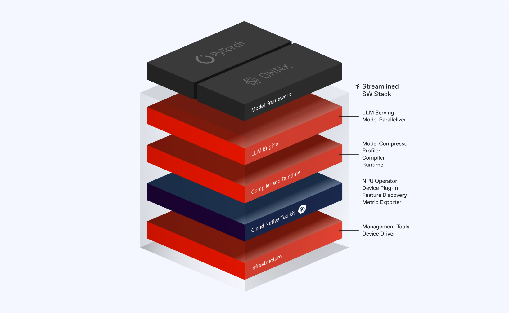

번역 안내
전체 기술 문서를 한국어로 번역한 비공식 번역본입니다. 코드 블록, 명령어, API 식별자와 주요 전문 용어는 원문 영어를 유지했습니다. 자동 번역이므로 운영 환경에 적용하기 전 원문과 대조하세요.
Furiosa 문서에 오신 것을 환영합니다#
FuriosaAI는 FuriosaAI NPU에서 딥러닝 모델 추론을 위한 최적화된 소프트웨어 스택을 제공합니다. 이 가이드는 PyTorch 모델에서 시작하여 모델 양자화, 모델 서빙 및 배포에 이르는 추론 애플리케이션을 만드는 전체 워크플로우를 다룹니다.
최신 릴리스의 최신 기능, 개선 사항 및 수정 사항에 대한 정보를 유지하십시오.
Furiosa-LLM은 LLM 모델용 고성능 추론 엔진입니다. 이 문서는 Furiosa-LLM 설치 및 사용 방법을 설명합니다.
FuriosaAI의 향후 계획 및 예정된 기능에 대해 알아보십시오. 개발 진행 상황 및 주요 마일스톤에 대한 정보를 유지하십시오.
FuriosaAI NPU용 사전 최적화 및 사전 컴파일된 모델은 Hugging Face Hub에서 제공됩니다. 최신 모델과 그 기능을 확인하십시오. (사전 최적화 및 사전 컴파일된 모델)
개요#


FuriosaAI RNGD: RNGD 하드웨어 사양 및 기능
FuriosaAI의 소프트웨어 스택: FuriosaAI 소프트웨어 스택 개요
지원되는 모델: 지원되는 모델 목록
새로운 기능: 최신 릴리스의 새로운 기능 및 변경 사항
로드맵: FuriosaAI 소프트웨어 스택의 미래 로드맵
시작하기#
필수 구성 요소 설치: FuriosaAI 소프트웨어 스택의 필수 구성 요소 설치 방법
FuriosaAI 소프트웨어 업그레이드: FuriosaAI 소프트웨어 스택 업그레이드 방법
Furiosa-LLM#
Furiosa-LLM: Furiosa-LLM에 대한 소개
OpenAI 호환 서버: OpenAI 호환 서버 및 기능에 대한 자세한 정보
도구 호출: 파서 및 선택 옵션과 함께 도구 호출에 대한 가이드
구조화된 출력: 구조화된 출력 생성에 대한 가이드
비전-언어 모델: 이미지 입력과 함께 비전-언어 모델을 제공하는 방법에 대한 가이드
Prefix Caching: 향상된 성능을위한 prefix caching 가이드
겹치기 기획: CPU 스케줄링과 중복 NPU 실행의 이점과 동굴
하이브리드 KV 캐시 관리: 하이브리드 KV 캐시 관리 이해 (하이브리드 KV 캐시 관리 이해)
데이터 병렬 라우팅: 점수 기반 데이터 병렬 라우팅 이해 (데이터 병렬 라우팅 이해)
C Furiosa 실행 파일 묶음 (FXB): 모델 라이프사이클, 건물, 캐싱, FXB와 서빙
텐서/파이프라인/데이터 병렬 처리: Furiosa-LLM에서 사용 가능한 모델 병렬 처리 방식
API 참조: Furiosa-LLM의 Python API 참조
예제: Furiosa-LLM 사용 예제
Kubernetes에 Furiosa-LLM 배포: Kubernetes에 Furiosa-LLM 배포에 대한 가이드
Mooncake와 Furiosa-LLM 함께 사용: Kubernetes에 Mooncake 배포에 대한 가이드
클라우드 네이티브 툴킷#
클라우드 네이티브 툴킷: 클라우드 네이티브 툴킷에 대한 개요
컨테이너 지원: 컨테이너 지원에 대한 개요
Kubernetes 플러그인: Kubernetes 지원에 대한 개요
Furiosa-LLM를 llm 방법을 사용하여 배포: Kubernetes에 LLM-D를 배치하는 가이드
장치 관리#
Furiosa SMI CLI: FuriosaAI NPU를 관리하기 위한 명령줄 유틸리티
Furiosa SMI 라이브러리: FuriosaAI NPU를 관리하기 위한 라이브러리
호스트 PCI 최적화 튜닝: 호스트 PCI 최적화 튜닝 가이드
튜토리얼 및 예제#
FuriosaAI SDK 요리 가이드: FuriosaAI NPUs를 사용하여 AI-driven 솔루션을위한 OSS 프로젝트 모음.